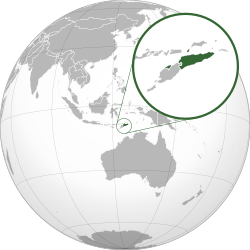

TIMOR LESTE
Descrição
Timor-Leste é um país localizado no Sudeste Asiático, ocupando a parte oriental da ilha de Timor, além de algumas ilhas menores como Ataúro e Jaco. Sua capital é Díli. O país conquistou sua independência em 2002, após um longo período de colonização portuguesa e posterior ocupação pela Indonésia.
Timor-Leste é considerado uma das nações mais jovens do mundo e ainda está em processo de desenvolvimento. Sua economia baseia-se principalmente na exploração de petróleo e gás natural, além da agricultura de subsistência. A cultura do país é fortemente marcada pela influência portuguesa, combinada com tradições locais, o que se reflete na língua, religião e costumes da população.
Características
- Geografia: O território é predominantemente montanhoso, com relevo acidentado que dificulta o transporte e o desenvolvimento de infraestrutura. O país também possui o enclave de Oecusse, separado do restante do território.
- População e Cultura: A população é majoritariamente católica, resultado da colonização portuguesa. A cultura combina tradições indígenas com influências europeias, presentes na música, dança e arquitetura.
- Clima: O clima é tropical, com duas estações bem definidas: a estação chuvosa e a seca. Em regiões montanhosas, as temperaturas podem ser mais amenas.
- Independência: Tornou-se independente oficialmente em 20 de maio de 2002, após anos de conflito e resistência contra a ocupação da Indonésia.
- Idioma: O tétum e o português são línguas oficiais. O português é usado principalmente em documentos oficiais, educação e governo.
Curiosidades
- Timor-Leste é um dos poucos países asiáticos onde o português é língua oficial, herança da colonização de Portugal.
- O nome “Timor” vem de uma palavra malaia que significa “leste”, ou seja, o nome do país significa literalmente “Leste-Leste”.
- A ilha de Timor é dividida entre Timor-Leste e a Indonésia, sendo o único país asiático com essa divisão territorial na região.
- O país possui uma das maiores biodiversidades marinhas do mundo, com recifes de coral muito preservados.
- A ilha de Ataúro é considerada uma das áreas com maior diversidade de espécies marinhas do planeta.
- A população é bastante jovem, o que pode influenciar o crescimento futuro do país.
- Apesar das dificuldades econômicas, há forte valorização das tradições locais e da vida comunitária.
Finalização
Timor-Leste é um exemplo de país que passou por um processo histórico extremamente difícil, marcado por colonização, conflitos e reconstrução. Mesmo enfrentando desafios como pobreza, infraestrutura limitada e dependência de recursos naturais, o país tem avançado gradualmente em sua organização política e social.
Seu futuro depende principalmente da diversificação econômica, investimentos em educação e melhoria das condições de vida da população. Com uma identidade cultural forte e uma população jovem, Timor-Leste possui potencial para se desenvolver de forma mais sustentável ao longo das próximas décadas.
Imagens
Bandeira

Localização
